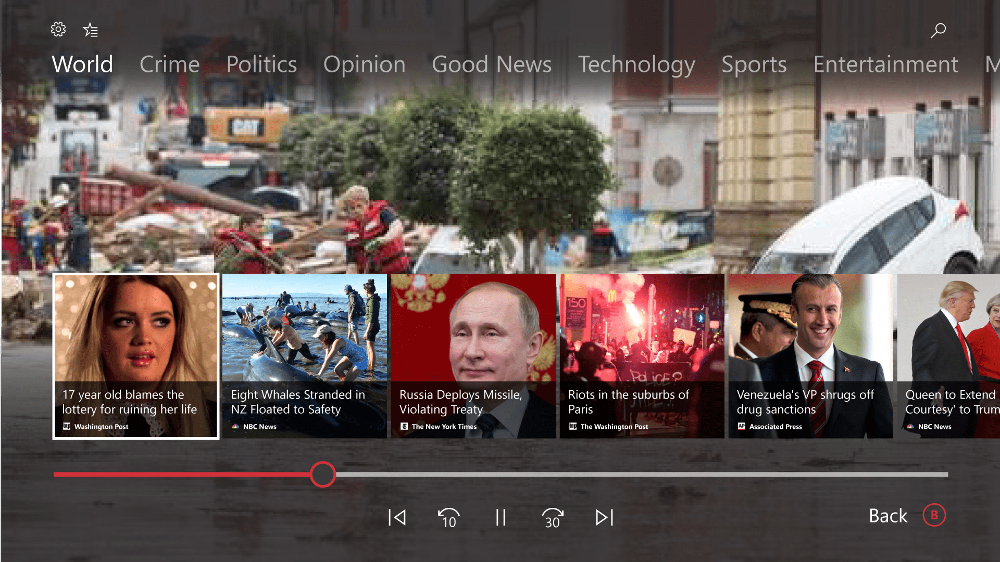
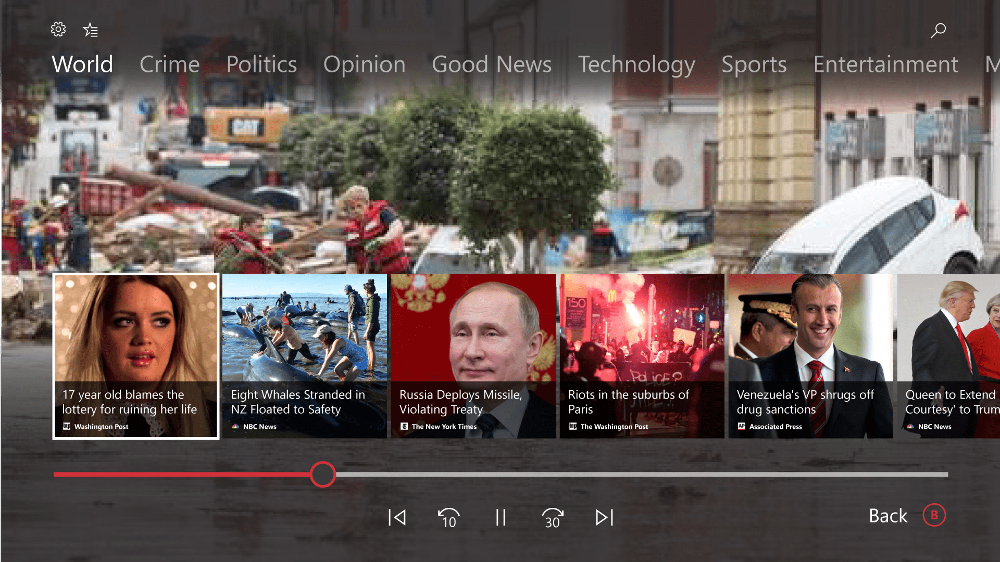
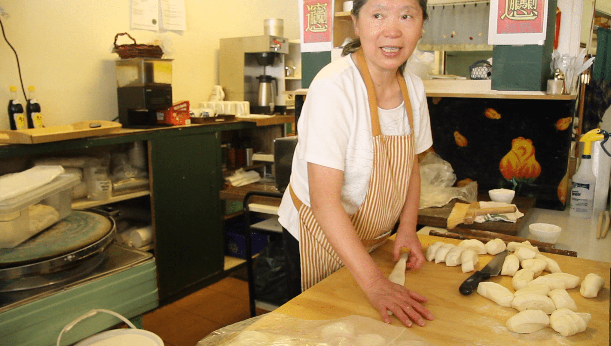
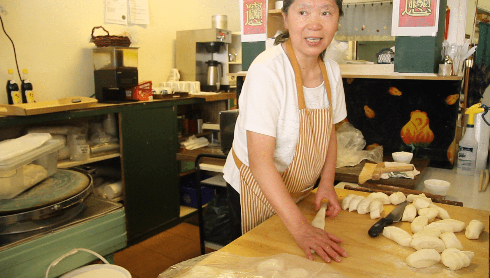

your news
Xbox One News AppMicrosoft Garage Internship 2017
In Winter 2017, I had the honor of being accepted into Microsoft's Garage Internship program. The Garage is an innovative program that encourages a kind of start-up/maker mindset within the company.
We set about creating an Xbox One app that would deliver personalized newsmedia to TV viewers. I was the sole UX designer with a team of engineers. The project was a success and we shipped in May 2017.
Microsoft had only recently started putting non-gaming apps on their Xbox One game platform, thanks to their UWP application framework. The first one to appear was the MSN Weather app.

We began our internship process with a hackathon. We were assigned one concept: bringing MSN News to the Xbox. As a UX designer, I had to group up with a couple of engineers.
We were given three days to get as far as we could in design and code. I let my team to discuss the broad needs of the design on a whiteboard. After that, we got to work.

I produced a mockup of how the MSN News experience could work on TV. I decided to focus on video content, with text-based content being a poor fit for the TV format. The experience would let you play through a playlist of content, which could be navigated at the user's will.
Meanwhile, my engineers got a simple prototype of this app working on a Windows 10 PC with an Xbox controller connected.


The hackathon was a success, and we recieved very positive feedback. Both myself and my two engineers were assigned this project for the duration of the internship.
My prototype design was fine for a broad concept, but I needed to iterate on the finer details of the UI. I set about designing layouts + interactions on paper - or rather, on a Windows Surface with pen.
 

Because this was a Microsoft Xbox project, it was a good idea to stick to the established design language of the Xbox One. I studied some of the existing media players on Xbox (top), and recreated their tile-based playlist style. (bottom)
When used as an overlay atop full-screen video, it created an appealing mockup in the style of Xbox.

I modified the tiles to look more "video-like". I also created a "favorites" page, that allows the user to customize different categories of story in tabs at the top of the overlay.

The key to improving the design of the UI is feedback. I systematically collected every piece of feedback I received, and posted it in our office space. Each one of those would be addressed one-by-one by the team, and then discarded or added as an action item.
I also created a visual map of the current site design, so that the team could visualize what it is that they were coding.

One whiteboard served as a space for democratizing design decisions. For every design item for which there was a question, I posted a visualization of it and solicited feedback from within and outside of the team.
We even brought outside playtesters into the building and surveyed them as to how they intuitively felt the design should be. This is how we strengthened the design and made it truly human-centric.


Our app needed a logo in the flat design currently used by Xbox. I explored the current iconography for news, and several symbols emerged: microphones + newspapers.
The final design combined two elemental symbols: a newspaper and a classic antenna TV.

We finished the Xbox One app and brought it to a final showcase in the Microsoft campus. I created a poster that showcased our design process and the features of the app.
The app was well received at the showcase, and less than a month later, the app appeared on the Xbox One Store for the whole world to download.


 
